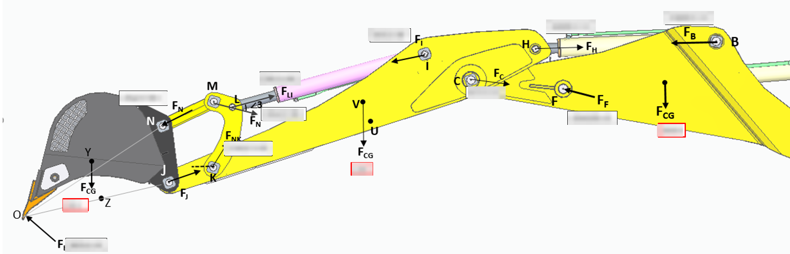
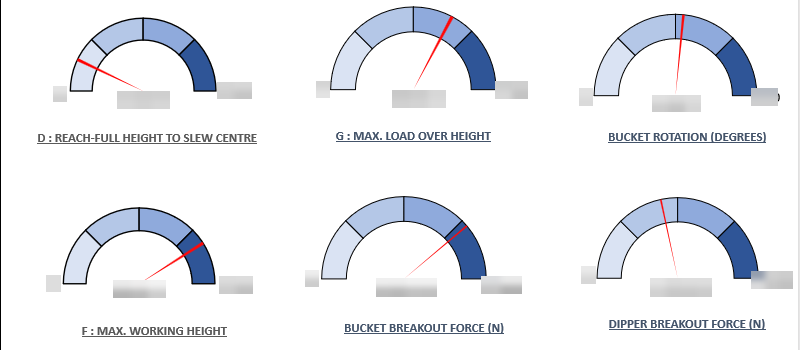
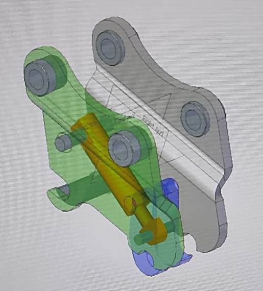

Work / P.08 · Case study
Backhoe Loader Kinematics & Force Analysis
A spreadsheet that replaced hand-drawn free-body work: linkage geometry goes in, every pin-joint force and the whole performance envelope come out.
- Context
- R&D internship — Escorts Kubota Limited, Agricultural & Construction Machinery division, India
- Date
- December 2021 – June 2022
- Team
- Individual deliverable within the R&D team. Internship formally certified by Escorts Kubota HR (EAM & ECE – R&D)
- Tools
- Microsoft Excel · VBA · Siemens Solid Edge
The requirement
Backhoe loader linkage analysis was being done by hand, one configuration at a time. Each change of geometry meant redrawing the free-body diagram, re-resolving forces at every pin joint, and recomputing the performance figures that the design is actually judged on. It was correct work and slow work, and because it was slow, fewer geometry options got evaluated than the design deserved.
The requirement, then: make linkage geometry a set of inputs, and make the pin-joint force solution and the performance envelope fall out automatically — so that trying a variant costs a value change rather than an afternoon.
Approach
The template is parametric from the geometry down. Link lengths and pin positions for the boom, dipper, kingpost, guide lever, guide link and bucket define the mechanism; from that geometry the workbook resolves the complete free-body solution at every pin joint, with reaction directions and centre-of-gravity contributions carried through each member rather than assumed.
The outputs are the figures a loader is specified by: reach to slew centre, maximum load over height, bucket rotation, maximum working height, and bucket and dipper breakout forces. VBA automates the parts that were previously manual bookkeeping — propagating a geometry change through the dependent calculations, and driving the gauge readouts that present each performance figure against its range.
Alongside the analysis work, a quick-hitch coupler was modelled in Siemens Solid Edge — mounting frame, pin bosses and hydraulic actuator — as a basic attachment-interface study.




Result
Manual calculation time for a linkage kinematic analysis dropped by roughly 30%, and — the part that matters more than the percentage — a geometry variant became cheap enough to actually try. The template was handed over as a working tool rather than a one-off calculation, and the internship was formally certified by Escorts Kubota HR.
What I'd do differently
- Validate against a measured breakout force. The solution is internally consistent and was never checked against a physical measurement on a built machine. One test on one loader would either confirm the model or expose whichever term the free-body treatment simplified — and until that check exists, the outputs are arithmetic rather than evidence.
- Not a spreadsheet. Excel with VBA was the right choice for adoption — it ran on every machine in the office with no approval needed — and the wrong choice for everything else. There are no unit tests, no version control, and a formula can be overwritten silently by anyone who opens the file. The same solver as a small Python module with a test per joint would be both safer and reusable.
- Sweep, don't spot-check. Having made a variant cheap, the tool still evaluates one configuration at a time. Wrapping the solver in a loop over the geometry parameters would turn it from a calculator into a design-space explorer, and the interesting output is then a trade-off surface rather than six gauges.